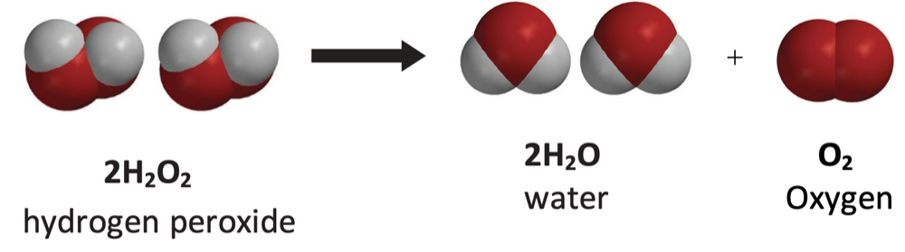

⏲ 10minutes
Ingrediënts
Equipment
What is Elphant toothpaste
Elphant toothpaste revers to a hot foamy substance made by mixing hydrogen peroxide with yeast and warm water as a catalyst.
Scientific explanation
Hydrogen peroxide is unstable when it is exposed to light. It
decmposes into oxygen and water. This reaction is exothermic meaning
that heat is released. The reaction happens really slowly but can be
faster when you use a catalyst (A compound that accelerates a chemical
reaction without being used in the reaction itself )
Liquid dishsoap Is used to trap the oxygen into micells (small
pherical clusters of hydrophic and hydrophilic parts. ) making the foam
Yeast Is used as a catalyst to speed up the process of the
hydrogen peroxide breaking down
Warm water is used to dissolve the yeast and make it active
When the yeast mixture is added to the hydrogenperoxide with soap a
reaction happens. Micells form from the water that is created with the
dishsoap, trapping the oxygen gas that forms when the hydrogen peroxide
breaks down. This happens so fast that it appears that foam is being
created. THe foam creates faster if you use higher concentrations of
hydrogenperoxide.

Instructions
1. Put the hydrogenperoxide with dishsoap and foodcoloring in a
bottle.
2. Put the bag of yeast in a small container or beaker with warm
water and mix
3. Add the yeast mixture to the bottle and watch the magic happen